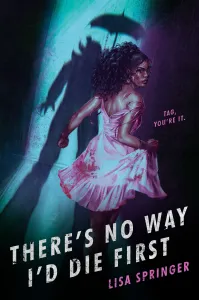

There's No Way I'd Die First by Lisa Springer
Posted on September 04, 2023
I received an advance copy of this book from NetGalley to facilitate my review. This does not affect my opinion of the book or the content of my review.

Title: There's No Way I'd Die FirstAuthor: Lisa Springer
Publisher: Random House Children's Books
Publication Date: September 05, 2023
Genre(s): YA Horror
Format: eARC
Source: NetGalley
Rating:
Debut author Lisa Springer delivers a spine-tingling, contemporary horror that follows a scary movie buff as she hosts an elaborate Halloween bash on her family’s estate but soon finds the festivities upended when she and her guests are forced to test their survival skills in a deadly party game.
Noelle Layne knows horror. Every trope, every warning sign, every survival tactic. She even leads a successful movie club dedicated to the genre. Thus, who better to throw the ultimate, most exclusive Halloween party on all of Long Island?
And with the guest list including the coolest kids in her senior class, her popularity is bound to spike. Hopefully, enough to warrant an expansion into podcasting. Plus, the fact that attractive, singer-songwriter Archer Mitchell is coming is honestly the candy corn on top. Nothing is going to kill her party vibes.
Except…maybe the low-budget It clown she hires to lead a classic round of tag. He’s supposed to be terrifying, though in a comforting, nostalgic way. Instead, the guy is giving major creeps. But maybe Noelle’s just that good at hosting?
Her confidence is immediately rocked when the night’s entertainment axes one of her guests. And he’s not done yet. If an evil, murderous clown thinks life is a game, then Noelle is ready to play. She’s been waiting a long time to prove that she’s a Final Girl.
Content Warning: Murder, Blood, Clowns
It is officially spooky season and what better way to start it off than with a great Young Adult Horror novel that will keep you on your toes and leave you questioning who your friends really are?
Characters
I have to say, I loved the characters in this book. Noelle is a fierce girl who is looking to make a name for herself, but not in either of her parents’ businesses and she’s on track to do just that with her horror movie club, Jump Scares. Archer, the pop music sensation discovered on TikTok, who is finishing high school and planning to go to Julliard despite his music career. Demario, Noelle’s best friend since forever. Taylor, a not-so-lucky-in-love friend who proves to be more resilient than you might think. There are others, but these four were my favorites. I liked the depth the characters had – the ones who needed it had it, the ones who didn’t did not, and while you’ll have to wait to find out all of their secrets, these characters are quite interesting.
Atmosphere
This book is written in a perfect atmosphere/setting – a big mansion, a raging thunderstorm, and a killer on the loose during what should have been an awesome Fright Night event for Jump Scares. We get to see several areas of the house and grounds and all of them are used to the story’s best advantage.
Writing
Many times I find that debut novels, especially those that have a genre of Horror, are not very well written. But that isn’t the case with There is No Way I’d Die First. This book is written well, easy to read, few if any typos (but I was reading an ARC, so we all know those aren’t final copies and might have mistakes in them), and just flows brilliantly. I loved it and I want to read more of Lisa Springer’s writing.
Plot
This book has a plot that reminds me of SAW without the over-the-top gore and elaborate schemes to get people to atone for their wrongdoing. People are being hunted down and murdered for their transgressions, or perceived transgressions, during what should have been a simple Fright Night gathering. The hows vary, but the whys are the most important thing, and wait until you find out the whys…
Intrigue
This book will definitely keep you coming back for more. You’ll want to know what’s going to happen next, who is going to die next, who is going to make it out alive. It’s a fast past, fun, thrilling read that will leave you guessing as to what will happen next.
Relationships
The relationships in this book are complicated in some cases – love triangles, crushes, and even relationships based on hatred. But they all work together to build the story as it is and for that reason they work. They aren’t too difficult to follow along with either, which is super helpful.
Ending
I loved the way this ended. Did we lose a few characters? Sure, that’s kind of the point of a horror novel – you usually lose a few characters along the way. Did the bad guys prevail or did good triumph? Well, you’ll have to read the book to find that out. But let’s just say that I was very impressed.
Conclusion
I gave this book 5 stars because it is a brilliant debut novel for Lisa Springer. I highly recommend this book to anyone who loves horror – especially if they want to read a horror novel that includes Black representation.
Playlist
I wanted to try my hand at making a playlist for this book – this playlist incorporates songs related to the horror movies mentioned, songs that seemed to fit the plot or the vibe of the book, and songs that are mentioned outright in the book. Enjoy!